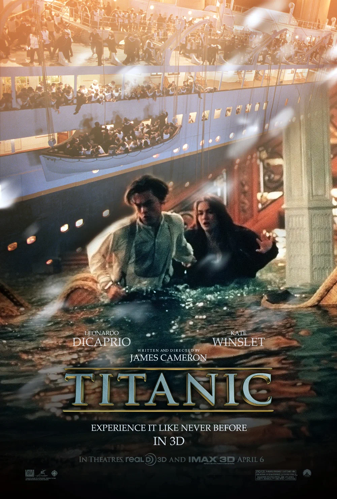

«Титаник» — американская драма режиссёра Джеймса Кэмерона, вышедшая в прокат в декабре 1997 года. Фильм рассказывает о гибели знаменитого лайнера, который затонул в апреле 1912 года во время своего первого рейса.
В центре сюжета — история любви бедного художника Джека Доусона (Леонардо Ди Каприо) и девушки из высшего общества Розы (Кейт Уинслет), которые встречаются на борту корабля.
Фильм получил 11 премий «Оскар» — столько же, сколько «Бен-Гур» и «Властелин колец: Возвращение короля».
Для фильма Джеймс Кэмерон снимал настоящие обломки «Титаника» на дне Атлантического океана.
Песня «My Heart Will Go On» в исполнении Селин Дион стала одной из самых известных песен из фильмов.